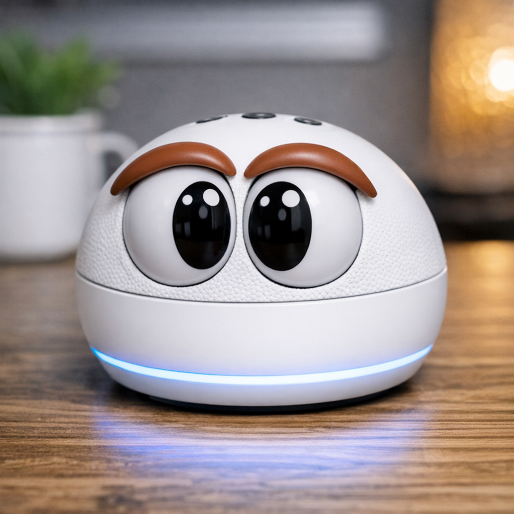

¿Qué es?
Una app que permite que Alexa acceda a la cámara de tu móvil y haga fotos por voz.
Aprovecha cualquier teléfono que tengas por casa y úsalo como cámara remota sin complicarte.
Para qué sirve
Ejemplos prácticos del día a día:
- Ver si tu mascota está tranquila o tramando algo.
- Comprobar si el robot aspirador se ha quedado atascado.
- Echar un vistazo rápido a una habitación sin moverte.
- Dar una segunda vida a un móvil que ya no usas.
Funciones gratuitas
Incluye lo básico para usar Ojo Móvil sin IA:
- Hacer fotos con Alexa; la app tiene una galería donde puedes revisarlas.
- Ver la cámara como vídeo desde un navegador o Smart TV que tengas conectado a tu WiFi.
Si mantienes el servidor web encendido mucho tiempo, gasta batería y puede funcionar como estufa de mano, cosa que aquí en Andalucía sobra la verdad.
Funciones Premium (IA con Ollama)
Las funciones que utilizan IA local están disponibles en la versión Premium.
Actualmente están en fase alfa.
Incluyen:
- Foto + descripción — La app hace una foto y la IA genera una descripción detallada.
- Foto + observación hasta que… — La cámara sigue analizando la escena y te avisa cuando detecta un cambio, movimiento u objeto.
Requieren Ollama configurado (gratuito) y una licencia Premium o Founder (muy barata).
Planes disponibles
Premium 1 año Acceso a todas las funciones con IA durante 12 meses. Pago único. Founder (de por vida) Pago único. Acceso permanente a todas las funciones actuales y futuras. Ir a la tienda →Compatibilidad
- Android 8+
- Alexa con Skills
- Cámara frontal o trasera
- Funciona con WiFi normal
Descargar
Prueba Ojo Móvil gratis.
Instala la app y úsala cuando la necesites.
Instalador: OjoMovil.apk (rama main, carpeta web/ en GitHub).